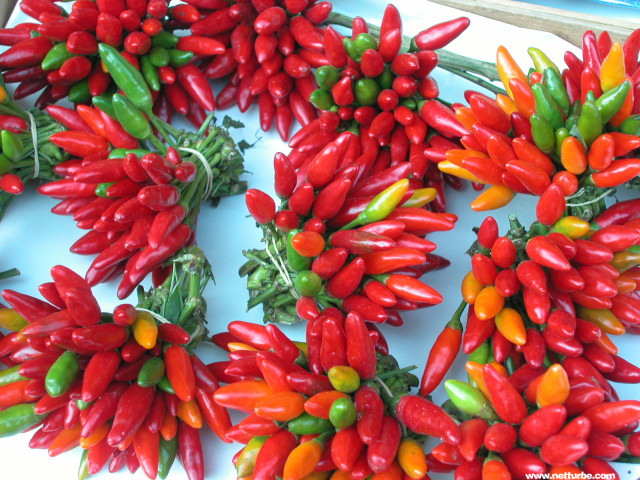
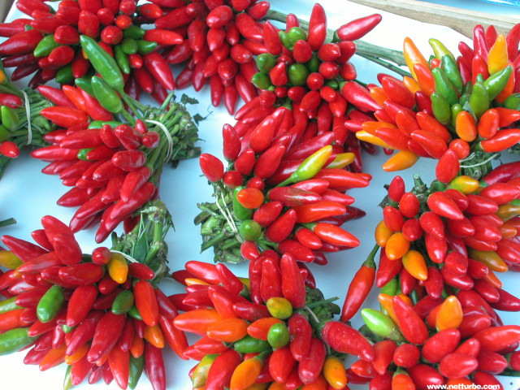

Sneak Peak of Next Month: Calabria, Italy
 

Calabrians use the mountainous area covering most of the region to raise hill-loving pigs, goats and sheep and comb the woods for chestnuts, acorns and wild mushrooms to add rustic flavors to their cooking. Adventurous fishermen have little trouble finding swordfish, cod, sardines, and shellfish. The inland freshwater lakes and streams offer trout in abundance.
Most of the cuisine of Calabria is heavily influenced by the Mediterranean and is often spicy. Pasta dishes with peppers, onions and sausage sauteed with or without sauce are very common. Frittatas made with pasta and sausage are also prevalent. Eggplant is a favorite dish in the region and is served in a variety of ways.
Due to the humid climate and the high risk of rapid molding and spoilage, food preservation is important. Oiling, salting, curing and smoking – almost all of the area’s food products can be found preserved in some form or another. Calabria’s many varieties of cured meats and sausages are served alongside fresh produce.